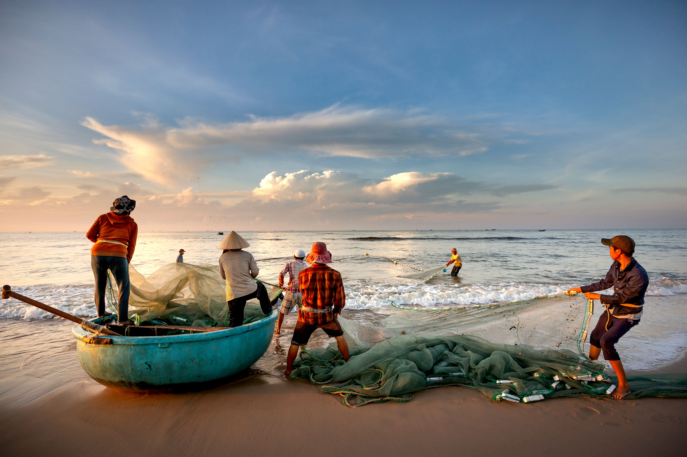

The evidence
Record growth, uneven availability

Communicating SOFIA 2026
A communication case study based on SOFIA 2026, adapting technical evidence for senior management, web and social audiences.
Record
195M tonnes
Aquatic animal production · 2024
Aquaculture shift
103M tonnes
53% of aquatic animal production · 2024
Food relevance
89%
Destined for human consumption · 2024
The evidence
Audience adaptation
The same evidence, shaped for social, web and senior-management audiences.
Original concept

Record aquatic animal production, but availability remains uneven across regions
SOFIA 2026 reports a new high in global aquatic animal production, with aquaculture now accounting for 53% of the total, while per-capita availability in Africa remains less than half the global average.

Global aquatic animal production reached 195 million tonnes in 2024, with aquaculture now producing the majority for the first time — 103 million tonnes, or 53% of the total. Yet the regional picture remains uneven: in 2023, aquatic animal food availability averaged 9.1 kg per person in Africa, compared with a global average of 21.1 kg.
Read the report →Key messages
Issues to raise
Watch points